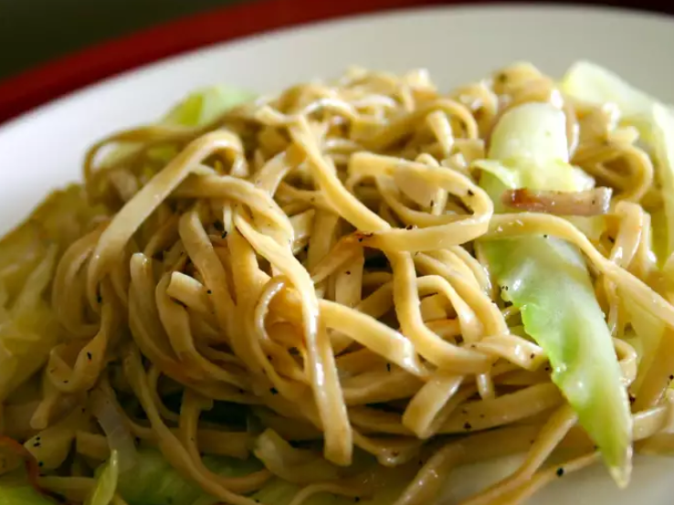

Fried Cabbage and Egg Noodles

Ingredients
- 1 (16 ounce) package egg noodles
- 1 stick butter
- 1 medium head green cabbage, chopped
- salt and pepper to taste
Instructions
- Bring a large pot of lightly salted water to a boil.
- Add egg noodles and cook until the pasta is tender yet firm to the bite, about 5 minutes; drain.
- Meanwhile, melt butter in a large skillet over low heat.
- Add cabbage and season with salt and pepper. Cover and cook until the cabbage begins to brown, 5 to 7 minutes.
- Add cooked noodles; cook and stir until the noodles begin to brown, about 5 minutes.
Acknowledgements
Adapted from All Recipes.